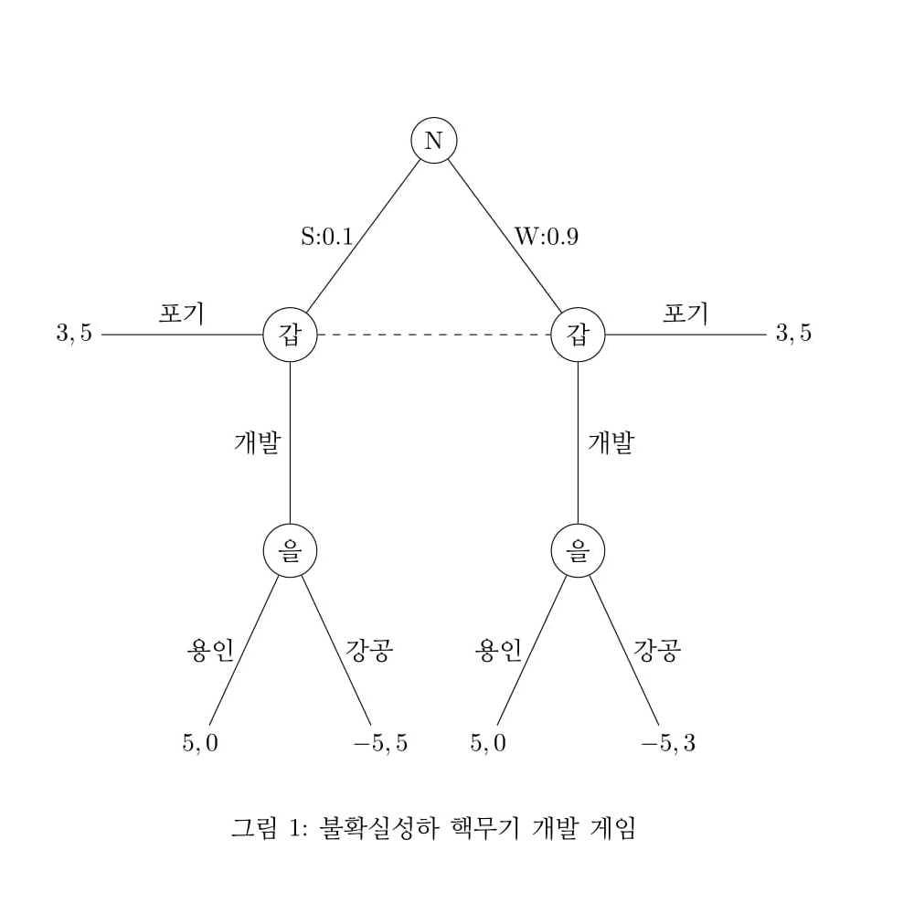
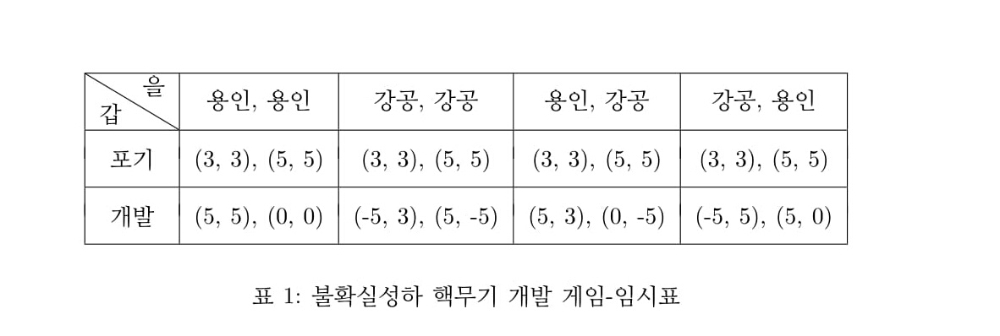
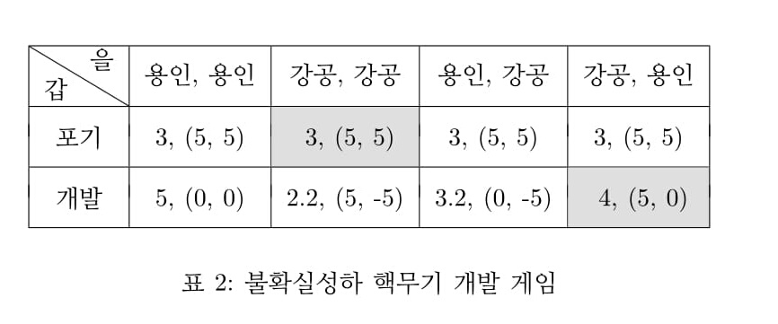
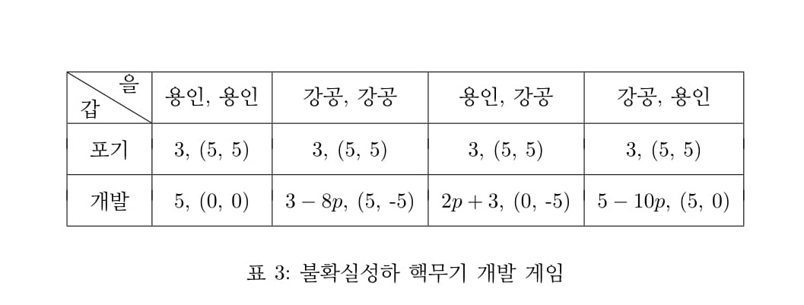

1. 불확실성하 핵무기개발 게임
불확실성이 존재하는 순차적 게임에서 불확실성의 의미는 두 가지이다. 상대방의 행동을 모르는 경우와 상대방의 유형을 모르는 경우이다. 앞의 완전베이지안균형 예는 전자의 경우이고 후자의 경우는 지금 서술한다.
앞의 부분게임 완전균형모형에서 설명한 핵무기 개발게임을 확장하자.
을국은 두 가지 유형이 있다. 강한 군사력(S), 약한 군사력(W), 강한 유형일 확률은 0.1, 약한 유형일 확률은 0.9 이다.
을국이 강한 유형일 경우 을국은 전쟁에서 승리하여 갑국을 흡수, 합병하므로 5 의 보수를 얻는다. 갑국은 -5의 보수를 얻는다.
을국이 약한 유형일 경우 을국은 전쟁에서 패배하여 갑국에 흡수, 합병되므로 -5의 보수를 얻는다. 갑국은 3의 보수를 얻는다. 다른 보수값은 앞의 부분게임 완전균형모형에서와 같다.
이상을 그림으로 표시하면 <그림 1>과 같다.

을의 유형은 자연(N)으로 표현한다.
갑은 을의 유형을 모르므로 갑의 노드는 정보집합으로 연결된다.
2. 완전베이지안 게임에서 전략과 보수의 정의
이 게임에서 전략은 유형별로 행동방안을 정하는 것이다.
갑의 전략 : {포기}, {개발}
을의 전략 : {갑 포기→을 무대응, 갑 개발 을 S→용인, W→용인}, {갑 포기→
을 무대응, 갑 개발 을 S→강공, W→강공}, {갑 포기→을 무대응, 갑 개발 S→
용인, W→강공}, {갑 포기→을 무대응, 갑 개발 을 S→강공, W→용인}
우선 임시로 유형별 보수표를 구하면 <표 1>과 같다. 1

예로서 {갑:포기, 을:용인, 용인}인 경우, 즉 <표 1>의 첫째 셀의 값은 다음과 같이 구한다.
첫째 셀은 갑 포기, 을 S 든 W 든 용인 선택이므로 갑 포기시의 유형별 보수값을 쓰면 된다.
갑의 보수는 <그림 1>에서 유형별 보수를 벡터로 (3, 3) 으로 표시한다. 을의 보수는 <그림 1>에서 유형별 보수를 벡터로 (5, 5) 로 표시한다.
그런데 완전베이지안 게임에서 게임의 보수는 갑의 경우 을의 유형을 모르므로 기대값을 구한다. 을의 경우는 유형별로 표기한다. 즉 유형을 모르는 측에서는 기대값을 구하고 유형을 아는 자신의 입장에서는 유형별로 보수를 벡터로 표시하는 것이 베이지안 게임에서와 같다.
이상을 구하면 <표 2>와 같다.

3. 완전베이지안 균형
<표 2>의 첫째 셀은 다음과 같이 구한다.
<표 1> 로부터 갑의 보수는 을이 S 유형일 확률 0.1, 보수 3, W 유형일 확률 0.9, 보수 3 이므로 기대보수는 3 × 0.1 + 3 × 0.9 = 3. 2
을의 보수는 유형별로 표기한다. <표 1>의 값 (5, 5)를 그대로 쓰면 된다.
다른 셀도 같은 방법으로 구한다.
내쉬균형은 정의상 모든 유형에 대해 이탈 유인이 없어야 한다. 즉 모든 유형에 대해 보수값이 다른 전략보다 크거나 같아야 한다. 갑의 경우는 기대보수를 비교하면 되고 을의 경우는 벡터의 모든 원소가 다른 벡터보다 크거나 같아야 한다.
이 게임에서 내쉬균형은 <표 2>에서 회색으로 칠해진 부분으로 {갑:포기, 을: (강공, 강공)}, {갑:개발, 을:(강공, 용인)}이다.
그런데 <그림 1>에서 보면 을은 S 유형일 경우 강공, W 유형일 경우 용인을 선택하는 것이 합리적이다. 따라서 위 첫째 내쉬균형은 균형경로가 갑이 포기하는 선택이지만 비균형 경로(을 S 유형 강공, W 유형 강공)가 비합리적이다.
둘째 내쉬균형은 균형경로가 갑이 개발하고 을 S 유형이면 강공, W 유형이면 용인 선택으로 비균형경로(갑 포기이면 무대응)의 불합리성이 없다. 따라서 둘째 내쉬균형이 완전베이지안 균형이 된다.
이를 완전베이지안 균형의 정의에 따라 다음과 같이 기술한다.
p = 0.1일 경우 {갑:개발, 을:(S:강공, W:용인)}
이때 갑의 기대보수는 4, 을의 보수는 S 유형이면 5, W 유형이면 0 이다.
즉 을이 강성일 가능성이 낮으므로 갑은 핵무기를 개발한다. 이때 을은 강성이면 공격, 약골이면 평화를 추구한다.
4. 유형의 확률을 모르는 경우
을이 강성일 확률을 p, 약골일 확률을 1 − p 라 하자.
게임표를 구하면 <표 3>과 같다.

을은 S 유형일 경우 강공, W 유형일 경우 용인을 선택하는 것이 합리적이므로 을의 전략 중 (강공, 용인) 을 제외한 나머지 전략들은 비합리적이다. 따라서 완전베이지안 균형을 구하기 위해 <표 3>의 마지막 열만 비교하면 된다.
갑의 포기시 기대보수 : 3
갑의 개발시 기대보수 : −5 × p + 5 x (1 − p) = 5 − 10p
이 둘을 비교하면 3 > 5 − 10p ⇒ p > 0.2
따라서 완전베이지안균형은 다음과 같다.
p > 0.2 이면 {갑:포기, 을:(S:강공, W:용인)}
이때 갑의 기대보수 3, 을의 보수 S 이면 5, W 이면 5
p < 0.2 이면 {갑:개발, 을:(S:강공, W:용인)}
이때 갑의 기대보수 5-10p, 을의 보수 S 이면 5, W 이면 0
갑은 을이 강성일 가능성이 조금이라도 있다면 핵무기를 포기하는 것이 최선이다. 그러나 을이 약골일 가능성이 아주 높다면 핵무기를 개발한다.
을은 갑의 핵무기를 개발 여부에 관계없이 강성이면 응징, 약골이면 평화를 추구한다.
1.표에서 을의 전략은 편의상 간략히 표기했다. 원래의 의미는 앞의 전략의 정의와 같다.
2. 완전베이지안게임에서는 확률(믿음)의 계산에 주의해야 한다. 본 게임에서는 갑이 먼저 행동하는 사람(first mover)이므로 을의 유형에 관한 판단, 즉 확률의 갱신이 필요 없다. 만약 을이 먼저 행동하고 갑이 후에 행동하는 사람(second mover)인 게임이라면 을의 유형에 대한 판단, 확률은 을의 행동에 따라 갱신되어야 한다. 이때 확률 갱신의 방법은 베이즈원칙에 따라 계산한다. 그래서 균형의 이름을 완전베이지안균형이라 명명한 것이다.